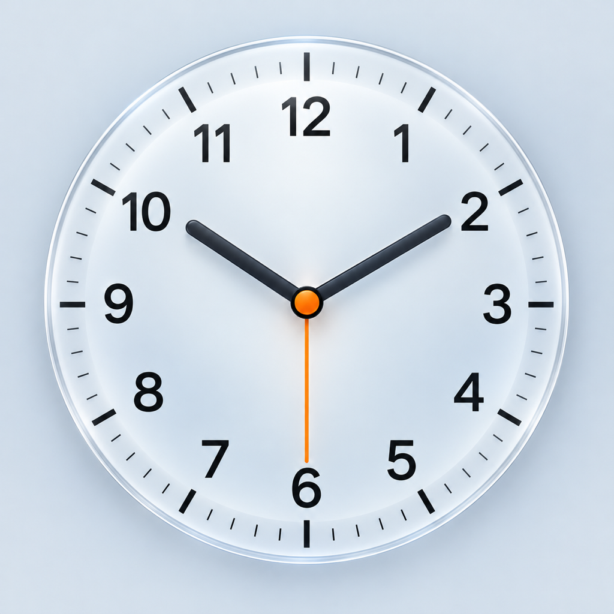

iPhone · iPadA Calmer Start to Your Day
Alarms, sleep schedules, timers, and a stopwatch in one native iPhone and iPad app. No account. No ads.
Alarms for Your Routine
Set one-time alarms, weekly repeats, or shift cycles. Adjust a single date without changing your regular schedule.
Snooze Your Way
Choose a snooze interval and limit. An optional wake check can ring again after you stop an alarm.
Timers and Stopwatch
Run multiple timers, pause and resume them, or track elapsed time with stopwatch laps.
A Better Bedtime Routine
Plan bedtime and wake-up time. Listen to rain or forest sounds while the app stays open in the foreground.
Sounds and Clock Themes
Choose from 12 built-in sounds or import an audio file. Optional lifetime PRO unlocks extra clock layouts and photo themes.
Local and Ad-Free
Keep schedules and settings on your device. Export and restore a JSON backup when you choose.
Before You Set an Alarm
Requires iOS or iPadOS 26.1 or later and alarm permission. Volume and vibration follow system settings. Shift cycles and date changes schedule the next eight valid alerts; open the app before the scheduling deadline shown in alarm details to replenish them. Lock Screen alerts use the system interface.
适合你的作息
支持单次、每周重复与周期排班，也可单独调整某一天，保留原有规则。
按需贪睡与醒后确认
自选贪睡间隔与次数上限。可选醒后确认，在停止闹钟后再次提醒。
计时器与秒表
多个计时器可暂停、继续，秒表支持分段计次，满足日常计时需求。
好眠与作息计划
规划就寝与起床时间。应用保持前台时，可聆听雨声或森林环境音。
铃声与时钟主题
12 首内置铃声，也可导入音频。可选 PRO 一次买断，解锁更多时钟布局与照片主题。
本地保存，无广告
作息与设置保存在设备上。需要时，手动导出或恢复 JSON 备份。
设置闹钟前请了解
需要 iOS 或 iPadOS 26.1 及以上版本，并授予闹钟权限。响铃音量与振动由系统控制。周期排班与单日调整会预排未来 8 次有效提醒，请在闹钟详情显示的预排截止时间前打开 App 补齐。锁屏响铃使用系统界面。
適合你的作息
支援單次、每週重複與週期排班，也可單獨調整某一天，保留原有規則。
自選貪睡與醒後確認
自選貪睡間隔與次數上限。可選用醒後確認，在停止鬧鐘後再次提醒。
計時器與碼錶
多個計時器可暫停、繼續，碼錶支援分段計時，滿足日常計時需求。
好眠與作息計畫
規劃就寢與起床時間。應用程式保持前景時，可聆聽雨聲或森林環境音。
鈴聲與時鐘主題
12 首內建鈴聲，也可輸入音訊。可選購一次買斷的 PRO，解鎖更多時鐘版面與照片主題。
本機儲存，沒有廣告
作息與設定儲存在裝置上。需要時，手動輸出或回復 JSON 備份。
設定鬧鐘前請了解
需要 iOS 或 iPadOS 26.1 以上版本，並允許鬧鐘權限。鈴聲音量與震動由系統控制。週期排班與單日調整會預先安排未來 8 次有效提醒，請在鬧鐘詳細資訊顯示的排程期限前開啟 App 補齊。鎖定畫面響鈴使用系統介面。
여유롭게 시작하는 하루
알람, 취침 계획, 타이머, 스톱워치를 하나로. iPhone과 iPad를 위한 네이티브 앱으로, 계정과 광고가 없습니다.
일상에 맞는 알람
일회성, 매주 반복, 교대 주기 알람을 설정하세요. 기존 규칙은 유지하면서 특정 날짜만 변경할 수 있습니다.
다시 알림과 기상 확인
다시 알림 간격과 횟수를 선택하세요. 선택 사항인 기상 확인을 사용하면 알람을 멈춘 뒤 한 번 더 알릴 수 있습니다.
타이머와 스톱워치
여러 타이머를 일시 정지하고 재개하거나, 스톱워치로 랩 시간을 기록하세요.
취침과 기상 계획
취침 및 기상 시간을 계획하세요. 앱을 전면에 열어 둔 동안 비 또는 숲 소리를 들을 수 있습니다.
사운드와 시계 테마
12가지 내장 사운드와 오디오 파일 가져오기를 지원합니다. 일회성 PRO 구매로 추가 시계 레이아웃과 사진 테마를 이용할 수 있습니다.
기기에 저장, 광고 없음
일정과 설정은 기기에 저장됩니다. 원할 때 JSON 백업을 내보내고 복원하세요.
알람 설정 전 확인 사항
iOS 또는 iPadOS 26.1 이상과 알람 권한이 필요합니다. 음량과 진동은 시스템 설정을 따릅니다. 교대 주기와 날짜별 변경은 다음 유효 알림 8회를 미리 예약합니다. 알람 세부 정보에 표시된 예약 기한 전에 앱을 열어 보충하세요. 잠금 화면에서는 시스템 알람 인터페이스를 사용합니다.
一日の始まりを、穏やかに
アラーム、就寝プラン、タイマー、ストップウォッチを一つに。iPhone と iPad のためのネイティブアプリ。アカウントも広告もありません。
生活に合うアラーム
1 回限り、毎週の繰り返し、シフト周期に対応。通常のルールを変えずに、特定の日だけ調整できます。
スヌーズと起床確認
スヌーズの間隔と上限回数を選択。任意の起床確認を使うと、アラーム停止後にもう一度通知できます。
タイマーとストップウォッチ
複数のタイマーを一時停止・再開。ストップウォッチではラップタイムも記録できます。
就寝と起床のプラン
就寝時刻と起床時刻を計画。アプリを前面で開いている間は、雨や森の環境音を再生できます。
サウンドと時計テーマ
12 種類の内蔵サウンドと音声ファイルの読み込みに対応。買い切りの PRO で追加の時計レイアウトと写真テーマを利用できます。
端末に保存、広告なし
スケジュールと設定は端末内に保存。必要に応じて JSON バックアップを書き出し、復元できます。
アラームを設定する前に
iOS または iPadOS 26.1 以降とアラームの許可が必要です。音量と振動はシステム設定に従います。シフト周期と日付ごとの変更では、次の有効な通知 8 回分を予約します。アラームの詳細に表示される予約期限までにアプリを開いて補充してください。ロック画面ではシステムのアラーム画面が表示されます。